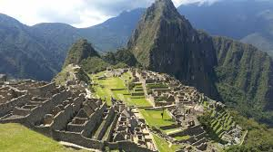

*TURISMO CULTURAL*
Se define como aquellas actividades que realizan un turisticas para presinciar, estudiar y aprender las caracteristicas culturales que un destino geografico posee y ofrece como producto turisticos.
La extencion geografica que comprende el turismo cultural puede ser a baja a escala, como visitar una pequeña poblacion, o gran magnitud, como recorrer diferentes partes de un pais.
El turismo cultural engloba los viajes que se realizan para conocer los aspectos culturales, desde historicos a artisticos de distintos destino culturas y personas desde una perspectiva mas amplia aboga por la preservacion de las constumbres narrativas representaciones e indtituciones de las comunidades locales a la vez que promueve.
El interes por el otro algunos autores sostinen qye su origen se remotan a la museologia de una parte y ala necesidad de preservar el floclore indigena de la otra.

*CARACTERISTICAS DE TURISMO CULTURAL*
- Este tipo de turismo generalmente tiene existencias en un lugar pror aproximadamente 3 a 4 dias.
- Es uno de los tipos de turismo mayormente escogidos por los turistas tanto extranjeros como nacionales.
- Se destaca por realizarse en vista a las ciudades y pueblos mas notables de la zona asi como tambien en donde se encuentra sus monumentos.
- Visita un centro turisticos es una forma de vivir la historia de un lugar lo que propociona un valioso aporte a la poblacion local que lo explora.
- Turismo incluye muchas actividades: Deportes, Arquitectura, Gastronomia, Naturaleza, Lenguaje, Arte, Socializacion y otras actividades tipicas de la zona.
- En la actualidad hay mas de mil sitios patrimonio de la humanidad la mayoria de los cuales son culturales y se distribuyen principalmente entre italia, china,alemania, españa, francia, india y mexico.

*AMBITOS DE ACTUACION DEL TURISMO CULTURAL*
- El turismo cultural tiene incidencia en varios ambitos socio economicos del destino donde se desarrolla.
- Ambito economico: Ya que genera ingresos y beneficios para la comunidad local.
- Ambito medioambiental:Ayaudando a la conservacion de los recursos naturales.
- Ambito social: Buscando satisfacer las necesidades e interes tanto turistas como de habitantes locales.
- Ambito cultural: Promoviendo la conservacion de la cultura, tradiciones y costumbres locales.
- Ambito educacional:Que ayude al aprendizaje y permita el respeto mutuo entre culturas.
*DESARROLLO SOSTENIBLE DEL TURISMO CULTURAL*
El desarrollo turístico de estos recursos patrimoniales e historicos se tiene que hacer de una forma planificada, responsable y controlada, para no poner en peligro elfuturo de los recursos disponibles.
En definitiva, es fundamental desarrollar una gestion sostenible del turismo cultural. Segun la organizacion mundial del turismo, sostenible es aquel turismo quesatisface las necesidades de los turistas actuales y de las regiones
receptoras, almismo tiempo que protege e incrementa las oportunidades para el futuro

*EJEMPLOS DE TURISMO CULTURAL*
- Ir a barcelona españa para visitar y conocer el templo expliatorio de la sagrada familia uno de los monumentos mas visitados del pais y gran representante de la arquitectura modernista catalana.
- Visitar a roma italia recorre la ciudad eterna y presenciar el centro historico de roma patrimonio de la humanidad y uno de los reconocidos a nivel mundial. posee innumeradas palacios y diseños aequitectonicos muy llamativos todos ellos erigidos bajo una historia detras que los respaldan.
- Dirigir a chiapas mexico e incursionar por el parque nacional palenque es un espacio con basta naturaleza a su alrededor y con una superficie de mas 1700 hectarias ofrece una historia y arquitectura disgna de conocer.
gomez gomez cleydi y@reni
6105 P.T.B informatica